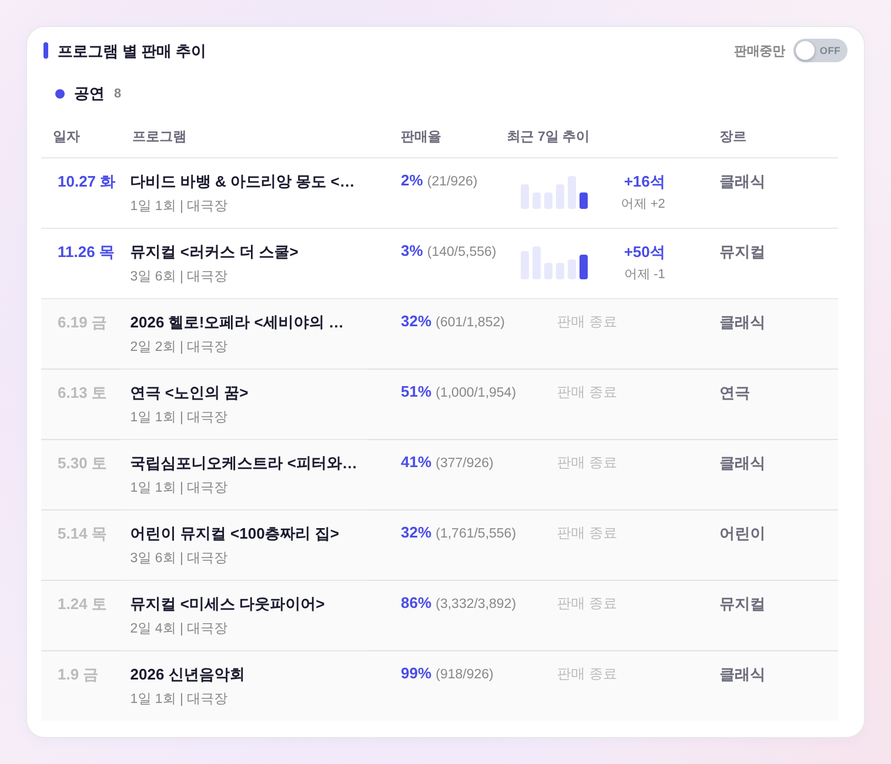
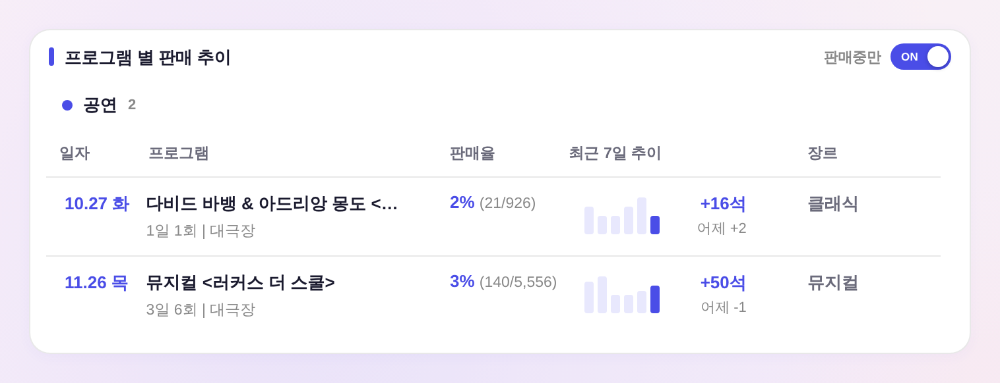
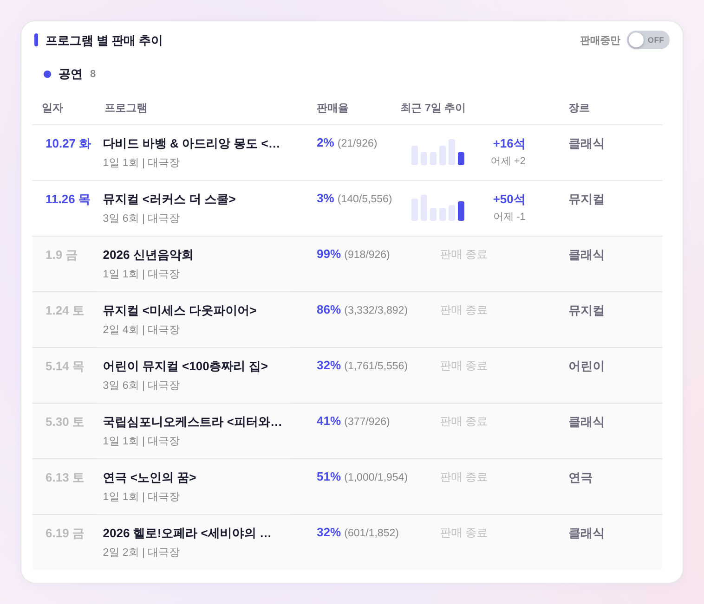

판매현황 — 「판매중만」 기본 켬 + 종료 프로그램 정렬 반전 (260803e)
운영자 지시: 「판매중만 을 기본값으로 해주고 / 판매중 아닌거는 지금 역으로 되어있는데 반대 방향으로 나열해줘」 · 실측 = 헤드리스 목데이터(전=HEAD·후=수정본, 정본 함수 실구동) · 판정 6/6 PASS
① 첫 화면 기본값 — 전체 노출 → 판매중만
전 — 토글 OFF 기본(종료 프로그램까지 전체)
후 — 토글 ON 기본(판매중만)
_ryLiveOnly 미저장 기본 = 켬(!=='0'). 사용자가 토글해 둔 기기(localStorage ryLiveOnly '1'/'0')는 그 값 그대로.
② 토글 해제(전체 보기) 시 종료 프로그램 정렬 — 최근 종료 먼저 → 종료일 오름차순
전 — 6.19 → 1.9 (최근 종료가 위)
후 — 1.9 → 6.19 (먼저 끝난 게 위)
byPast 내림차순(bd-ad) → 오름차순(ad-bd). 판매중 그룹은 종전 시작일순 그대로 상단 유지 — 위→아래 시간 진행 방향이 두 그룹에서 같아진다. 일자 미상은 종전대로 맨 뒤.